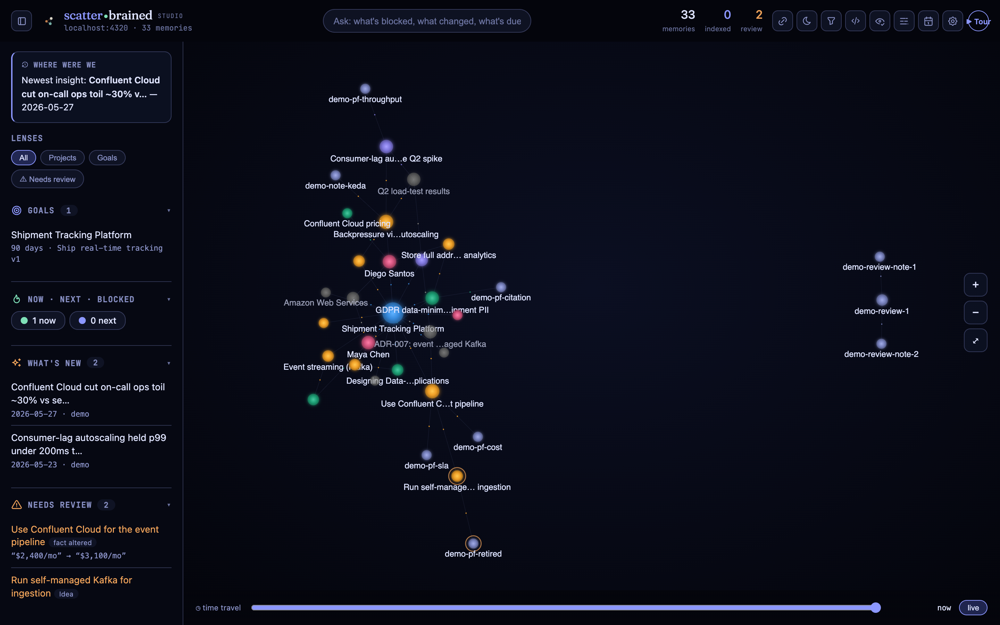
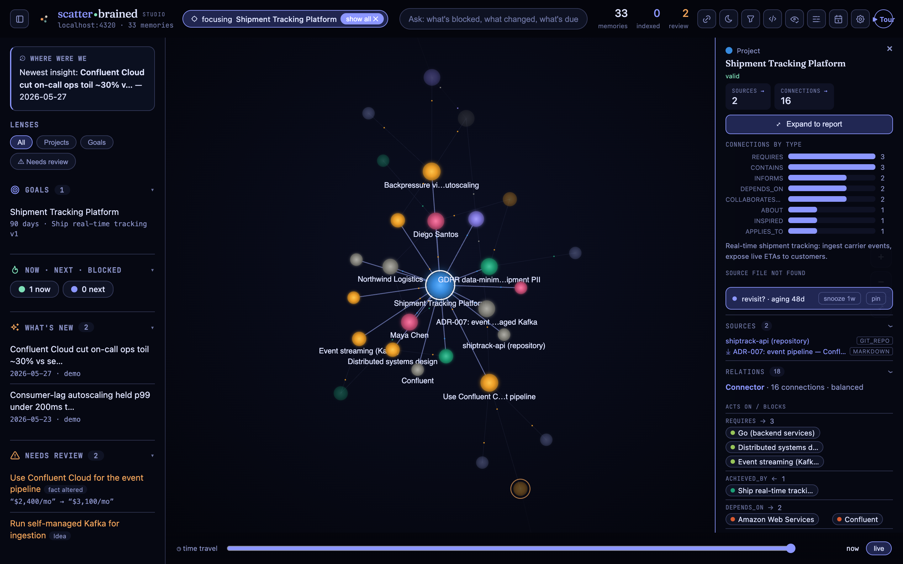
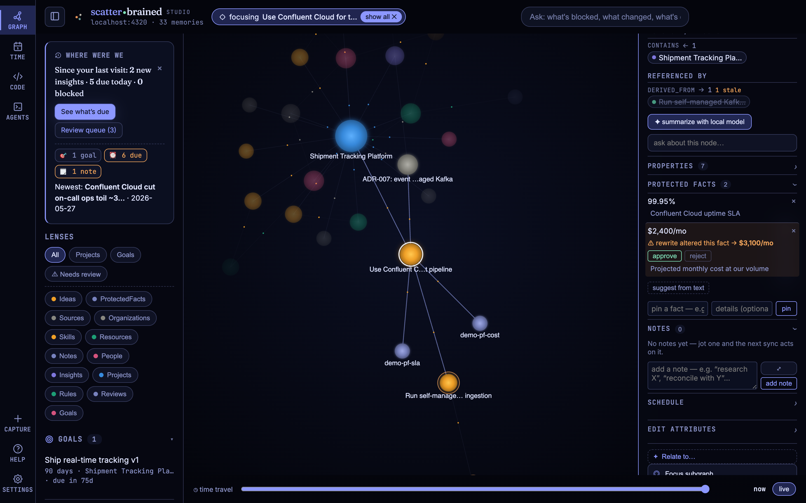
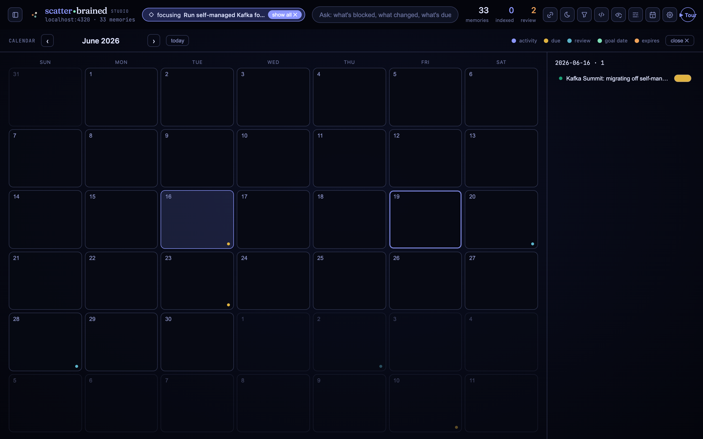
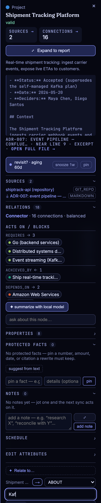
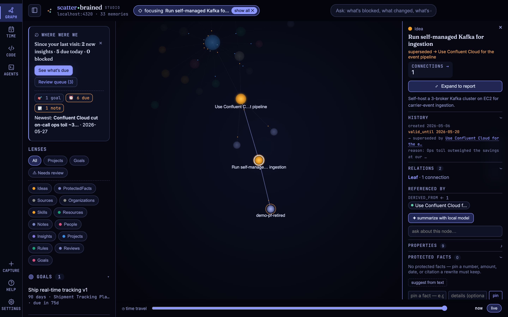
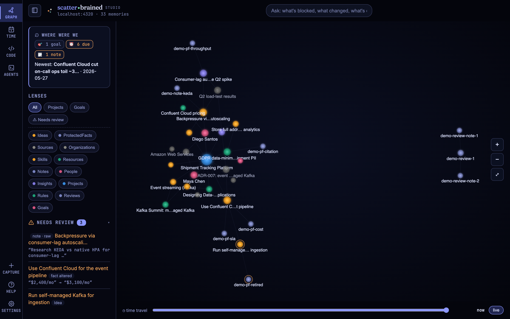
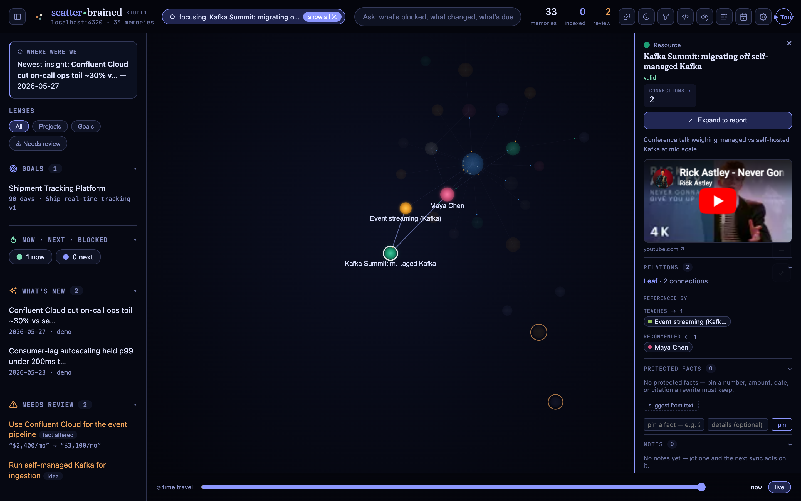
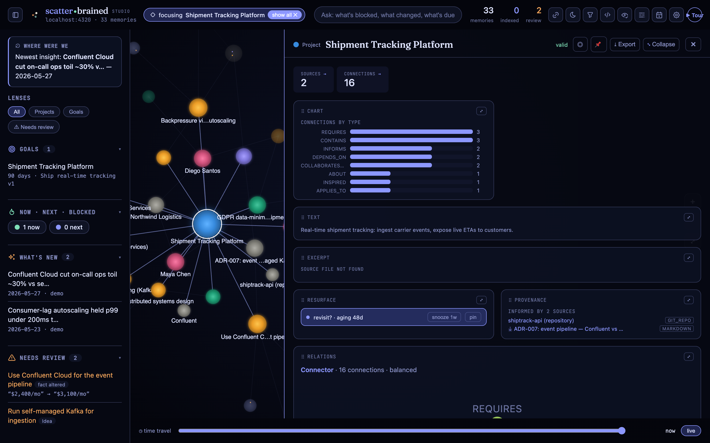

It outgrows your head
Notes, docs, decisions, and links pile up across a dozen tools. The connections that matter live only in memory — until they don't.
local-first knowledge observatory
/ˈskadərˌbreɪnd/ · adjective — a mind full of scattered thoughts; wired together, they remember everything.
Point it at your Neo4j graph and see your knowledge — a living constellation you can explore, interrogate, and act on. No cloud, no telemetry.
01 — the problem
Notes, docs, decisions, and links pile up across a dozen tools. The connections that matter live only in memory — until they don't.
You remember there was a reason, a number, a trade-off — just not where. Keyword search returns everything except the thread you're chasing.
Decisions get reversed and the reasoning evaporates. Six months later, “why didn't we just…” has no answer left to find.
02 — the studio
Point Scatterbrained at your Neo4j graph and it renders the whole thing as a living constellation you explore on your own machine. Click any node and the inspector composes itself from what that node is — a goal shows its progress, a source its file, a decision its history. Focus to fade the noise, ask in plain language, and follow a fact to the moment it changed.


03 — protected facts
Pin a fact that matters — an amount, a date, a threshold, a statutory citation — to any node, with an optional plain-language detail saying what it is (“Confluent Cloud uptime SLA”). When a later rewrite (an AI polish, a sync, a careless edit) would drop or change it, Scatterbrained catches it and holds the change for your approval instead of letting it slip. Approve and it supersedes the old value with its history kept; reject and the fact stands. Pinning is reversible.

04 — graph-native code review
Open any repo at a chosen commit, read it with editor-grade highlighting, and leave line
comments — but each comment is a graph Note, author-stamped (you or the agent),
PART_OF a Review node pinned to that repo@ref. The review becomes a living,
click-through subgraph with a verdict, connected to the rest of your knowledge instead of stranded in a
pull request.
Note by the agent, PART_OF the Review for shiptrack-api @ 9f3a1c2 — one of two, the other resolved by you.05 — a sense of time
Knowledge has two clocks. Record time — when a fact was written or superseded — is kept automatically. Intention time is yours to set: give any node a deadline or a revisit date, and a goal a target. The calendar and agenda read them back, so the graph reminds you of the deadline you set and nudges you to revisit the idea you meant to return to.

06 — inline graph editing

Reading the graph is half of it. From any node's inspector, relate it to another: type a few letters, pick from a fuzzy typeahead, choose the relationship and its direction, and the edge is written.
Every link is checked against a closed vocabulary of relationship types and valid shapes, so the graph stays traversable — you can't invent an off-vocab edge or point one backwards. Edit attributes the same way. The Studio isn't a read-only viewer; it's how you tend the graph by hand.
demo: linking “Shipment Tracking Platform” → ABOUT a Kafka-related node
07 — documents, read and written
A source isn't a dead link. Open it right on the node: Markdown, PDF, Excel and CSV, Word, PowerPoint, and plain text all render inline — no detour to another app. And Markdown you can change: edit it in the Studio, and every save writes the file and commits it to git, with a version history you can scrub. While you're editing, the file is locked so you and the agent never overwrite each other.
08 — notes that get acted on
On any node — or a line of a document, or a spot in a code review — jot a note in plain language: “reconcile this with the Q3 figures,” “research whether we still need this.” It's saved in a raw state. The next graph-sync hands your notes to the agent, which reads each one, does the work, and marks it addressed — a lightweight queue you and the agent share, attached right to the thing it's about.
A note is a task you leave for the agent to act on (raw → addressed). A protected fact's details is just a static label describing a pinned value — what it is, not something to do. One gets worked; one only describes.
09 — inside the graph
Thirteen node types, joined by a small closed vocabulary of edges. Every insight points at what it's about; every fact points back at the source that informs it. A slice:
the edge vocabulary is closed: ABOUT · INFORMS · DERIVED_FROM · CONTAINS · PART_OF · REQUIRES · DEPENDS_ON · CONSTRAINS · APPLIES_TO · ACHIEVED_BY · SUPPORTS · TEACHES · USED_IN · INSPIRED · WORKS_AT · PUBLISHED · RECOMMENDED · COLLABORATES_ON · ADVISED_ON · FLAGGED_RISK · BLOCKED_BY · INFORMED_BY · ROUTES_TO — no inventing new ones, and lint:graph rejects anything off-list, so traversals stay predictable.
A few more surfaces from the bundled demo graph — history, the review dock, captured media, and one-click briefings.




the system — how it all fits
The Studio is what you see, but it's the visible face of a few pieces that cover each other's blind spots — a graph that stays trustworthy, an agent that's kept using it, and a discipline that keeps what gets written lean. All of it runs on your machine.
The observatory: a browser app, served locally, that renders your graph as a constellation and lets you read, interrogate, and edit it. The surface you actually live in.
Neo4j as canonical truth, kept honest by the methodology: provenance on every fact (Source ─INFORMS→), invalidate-don't-delete history, lint:graph integrity checks, and export → git backups. An internal capability, not a second brand.
new-projectStands up a project as a coherent whole: registers it in the graph (project, goal, and a wired source), scaffolds optional plain-language Notion digests for non-technical stakeholders, and drops a ready-to-use CLAUDE.md in the repo.
CLAUDE.mdThe agent's operating manual for that project: query the graph first, dual-write every decision to a place a human reads (not just a Cypher query), and what a “sync” actually means. Setup that would otherwise live in your head, written down where the agent reads it.
A rule in a file gets read once and forgotten. So .claude/ ships two Claude Code hooks that re-inject it deterministically: a SessionStart hook (the full rule, once) and a terse UserPromptSubmit nudge (~40 tokens a turn). The agent can't quietly skip consulting the graph. Toggle either via /hooks.
The same CLAUDE.md tells the agent to write the minimum that works — a six-step decision ladder (skip it · stdlib · platform · existing dependency · one line · only then build) so it reuses and deletes before it adds. Security, input validation, data-loss handling, error handling, and accessibility are never minimized away. Adapted from Ponytail.
Prefer the keyboard? The published scatterbrained command is the three you need — studio, capture, status. The full toolkit (lint:graph, resume, search, export, and more) ships with the repo — clone it and run npm run <command>. Prefer plain language? Agent recipes (graph-sync, new-project) give the same results by just asking Claude. Same system; pick your lane.
Each piece covers another's blind spot: the Studio makes the graph
legible, the engine keeps it trustworthy, the hooks and CLAUDE.md keep the agent
using it, and Ponytail keeps what the agent writes lean. One system — on your machine, yours to change.
before you adopt — honest caveats
It's local-first and reversible, but it's not zero-touch — here's exactly what the scaffolding does to your files and what to know before you wire it into a real project.
new-project drops a CLAUDE.md and a .claude/ folder
(the graph-first hooks plus a settings.json) into your project. An existing
CLAUDE.md is left untouched unless you pass --force,
and your settings.json is merged, never clobbered. Everything it
writes lands in your repo — review it in the diff before you commit; edit or delete any of it.
/hooks turns it off anytime..claude/ hooks fire in Claude Code; other agents won't run them. The CLAUDE.md itself still works everywhere as plain guidance.--dry-run.CLAUDE.md after an upgrade.Nothing phones home, and nothing here is one-way: the files are in
your repo, the hooks are in /hooks, and the graph is plain Neo4j you can export to
git. Adopt it a piece at a time.
get set up — macOS
New to Node or Docker? That's all this needs — and Homebrew installs both in a couple of
lines. npm start does the rest: it finds or spins up the graph database, loads a demo graph,
and opens the Studio. No build step, nothing in the cloud.
The macOS package manager. Already have brew? Skip ahead. Otherwise paste this into Terminal:
/bin/bash -c "$(curl -fsSL https://raw.githubusercontent.com/Homebrew/install/HEAD/install.sh)"
Node runs the Studio; Docker quietly hosts the graph database in the background.
brew install node brew install --cask docker
then open Docker once from Applications so it's running — the only click-not-type step. Prefer no app? brew install colima docker then colima start is a CLI-only alternative.
git clone https://github.com/ricksinclair/scatterbrained.git
cd scatterbrained
npm install
npm start # → http://localhost:4317
That opens the Studio with a demo graph already loaded — explore it before you point Scatterbrained at anything of your own.
or already have Node + Docker? Skip the clone — one command downloads it, starts the database, seeds the demo, and opens the Studio:
npx scatterbrained@alpha studio # → http://localhost:4317
tip install it once with npm i -g scatterbrained@alpha, then scatterbrained studio (or scatterbrained help for the graph toolkit) from anywhere.
winget install OpenJS.NodeJS Docker.DockerDesktop, launch Docker Desktop, then npm install && npm start in the project folder.
Install Node 18+ (your distro or nvm) and Docker Engine, then npm install && npm start. Already running a Neo4j 5? Set NEO4J_PASSWORD and it'll use that instead of spinning its own.
New to Node, Docker, or graphs? The full getting-started guide walks through it with a plain-language primer.
AI summary / Q&A are optional (a local Ollama). Everything else works without it — and nothing leaves your machine.
take it and make it yours
Scatterbrained is MIT-licensed and local-first: plain Neo4j, vanilla JS, a handful of small scripts, and your data on your own machine. Clone it, run it, and bend it to how you actually think. No account, no lock-in, nothing to outgrow.